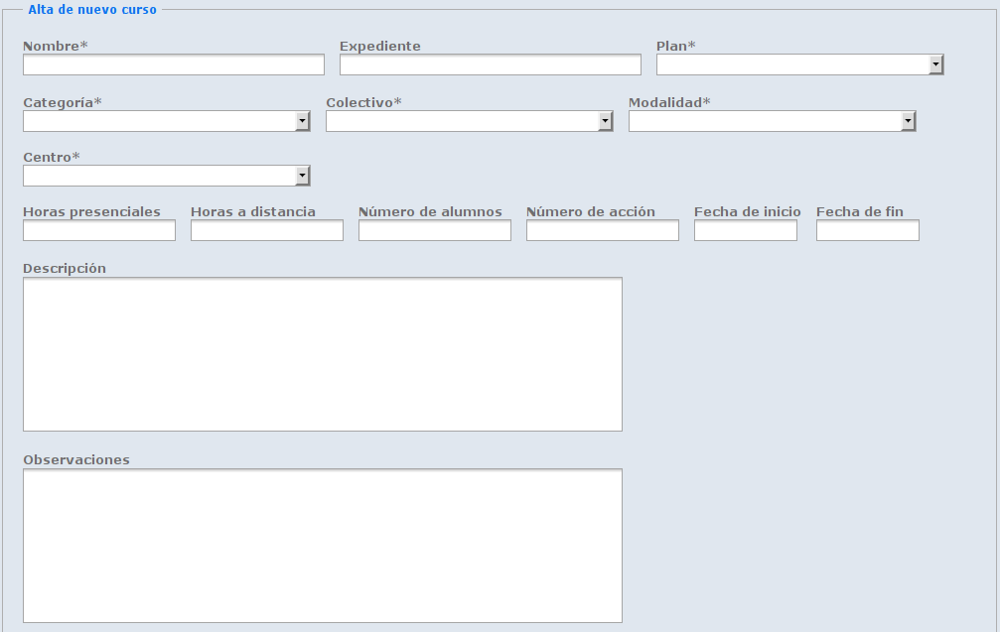
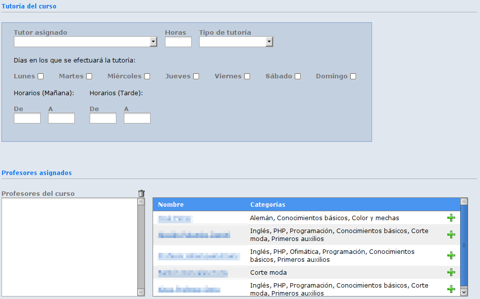
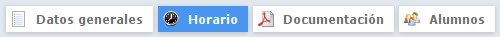
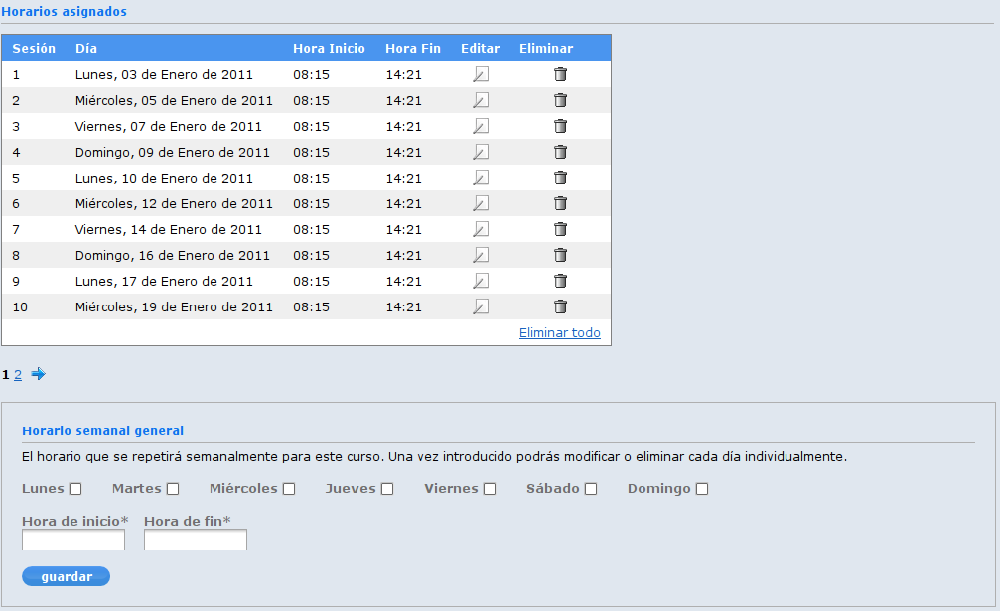
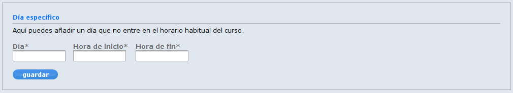
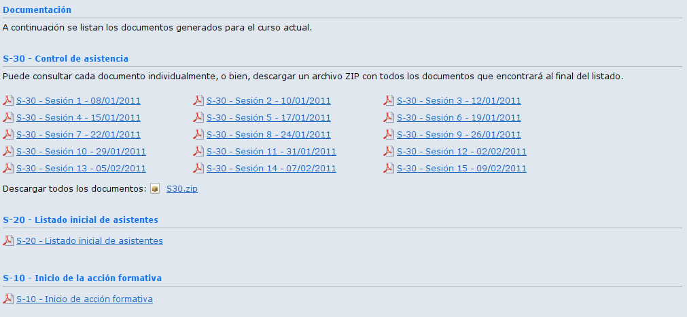
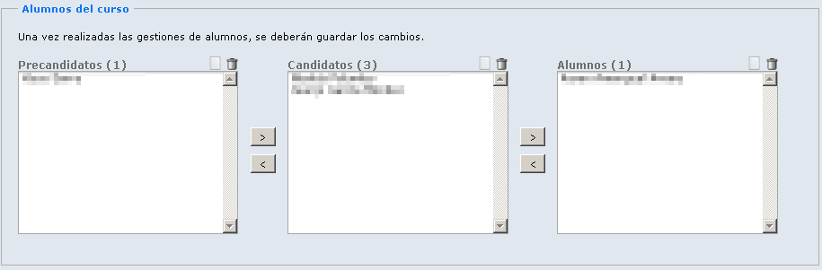
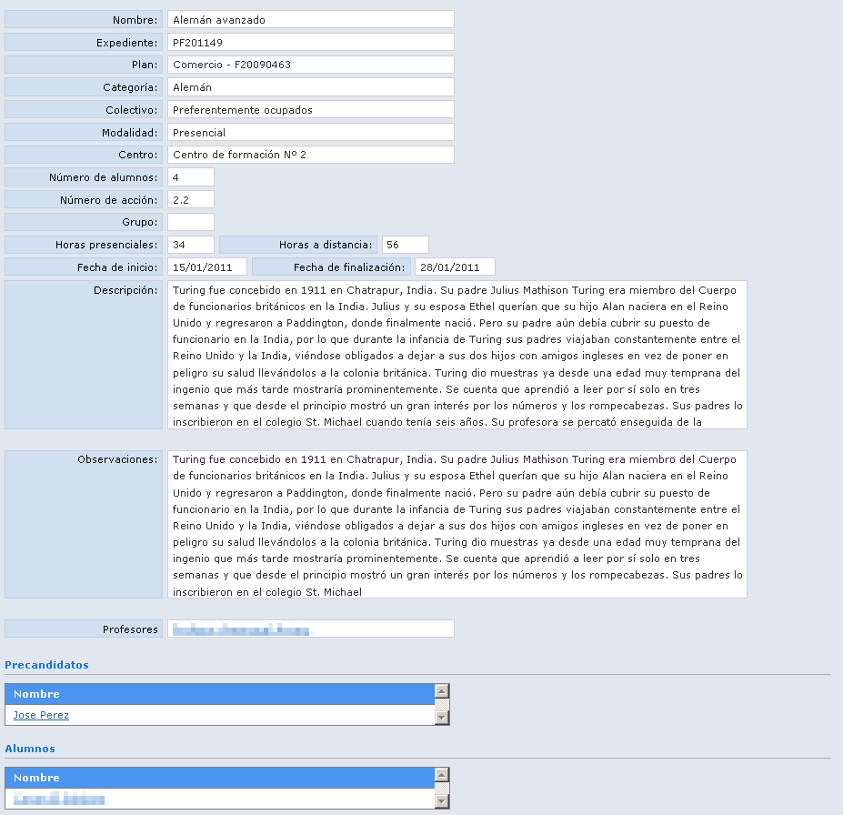

 Alta de las tutorías y los profesores

La edición del curso consta de 4 pestañas: Datos generales, horario, documentación y alumnos. La primera de ellas, datos generales, contiene el mismo formulario que el alta. Ahora pasaremos a explicar los otros 3 formularios.
Al añadir un horario a un curso se ofrece la posibilidad de crear un horario semanal para toda la duración del curso, o bien crear el horario para un día concreto.
 Horario semanal
El horario semanal nos permite seleccionar los días en los que se impartirá el curso y las horas de inicio y de fin. Una vez rellenados los datos nos creará todas las sesiones del curso dependiendo de los días seleccionados, la fecha de inicio del curso y la fecha de fin. Como se puede observar existe la posibilidad de eliminar un día en concreto, editarlo o bien eliminar todo el horario para generarlo de nuevo.
 Horario específico
Puede darse el caso de que el curso necesite algún día de clase que se salga del horario general; Este formulario permite seleccionar un día concreto y una hora de inicio y de fin.

La documentación que se genere del curso depende de la documentación necesaria para la convocatoria a la que pertenezca.
En este caso hemos generado el S-10, S-20 y S-30. Se puede descargar cada uno por separado, o bien descargar en un archivo zip todos los archivos S-30.

En este apartado se gestionan los precandidatos, candidatos y alumnos de un curso. Podemos pasarlos de un estado a otro, eliminarlos o consultar su ficha.

Visión general de los campos del curso. Para consultar el horario y la documentación hay que ir a la edición del curso. Desde la ficha se pueden consultar los alumnos y profesores que forman parte de él.